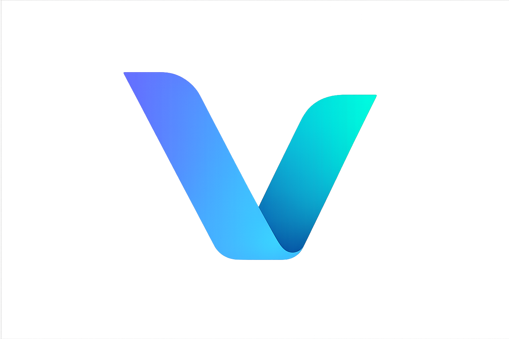

VETCron
Yapım Aşamasında
Çok Yakında
Veteriner klinik yönetiminde yapay zeka devrimi
VETCron, teşhis ve tedavi süreçlerinden hasta ekleme ve güncellemeye kadar tüm klinik operasyonlarınızı AI ile güçlendiren yeni nesil veteriner yazılımıdır. Klinik yönetimini teknolojik hale getiriyoruz.
AI Destekli Teşhis
Veriye dayalı teşhis önerileri ile daha hızlı ve doğru kararlar.
Akıllı Hasta Yönetimi
Hasta kayıt, güncelleme ve takip süreçlerinde AI destekli otomasyon.
Dijital Klinik Operasyonları
Randevu, stok ve ekip yönetimini tek platformda birleştirin.